پذيرش > سایت نوشته ها > نقاشـــی های ننـــه صنــــوبر و ننه حســــن


 نقاشـــی های ننـــه صنــــوبر و ننه حســــن نقاشـــی های ننـــه صنــــوبر و ننه حســــن
19 تیر 1392 - - نسخه قابل چاپ
در جوامع سنتی، مقولهای بنام «بازنشستگی» وجود ندارد. در جوامع در حال توسعه اما بازنشستگان کاربردی ندارند. ننه حسن نشان داد که پیری پایان راه نیست و میتواند سرآغاز فصلی نوین در زندگی باشد. اکنون در بسیاری از جوامع پیشرفته از تواناییها و تجربیات سالمندان در رشتههای گوناگون استفاده میشود و بسیاری از آنها به کارها و علائقی میپردازند که در گذشته وقت، امکان و شاید پول آن را نداشتند. ترودی شرودر، زن ۶۶ آلمانی سال گذشته به همراه چند زن هنرمند دیگر بعد از بازنشسته شدناش یک مغازه فروش صنایع دستی راه انداخت. او در مورد برنامه کاریاش به دویچه وله میگوید که روز دوشنبه به کلاس آموزش زبان انگلیسی میرود، روز سهشنبه آموزش زبان اسپانیایی در دستور کارش است و روز جمعه نیز برای شاگردانش کلاس آموزش نقاشی دارد. حکایت ننه حسن و ترودی شرودر نمونههای خوبی برای فرهنگسازی است.
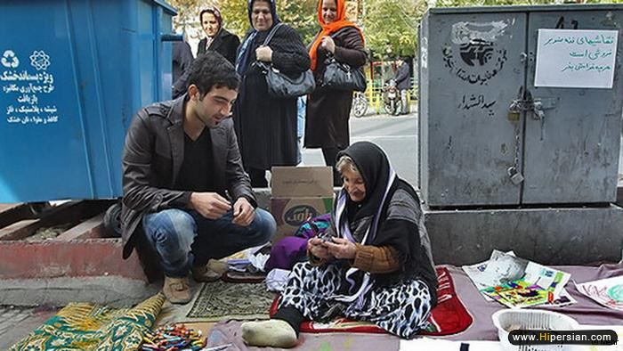
آغاز کار ننه صنوبر
چند سال پیش وقتی بساط نقاشی برادرزاده ننه صنوبر در حیاط خانه پهن بود، برگی از درخت روی صفحه کاغذ افتاد. ننه صنوبر دور تا دور برگ را روی صفحه سفید کاغذ کشید. نقاشی شبیه برگ شد آن وقت با مداد سبز آن را رنگ کرد. درست همین لحظه بود که ننه صنوبر فکر کرد میتواند نقاشی کند.
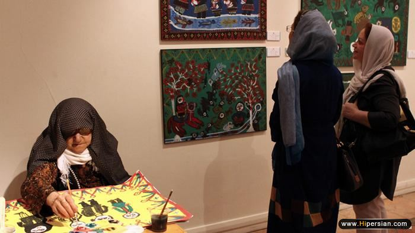
آغاز کار ننه حسن
فرزند منور رمضانی «ننه حسن» این نقاش ۷۶ ساله میگوید: «سال ۷۸ من سیاهقلم کار میکردم و مادرم کنار دست من مینشست و از روی کارهای من کار میکرد. کارهایش از دید من خیلی خاص بودند پس تشویقش کردم که بیشتر کار کند و نقاشی بکشد.»
شغل ننه صنوبر: کارگر کورهپزخانه
به نوشته خبرگزاری مهر:«شوهر ننه صنوبر اهل گرجستان بود ولی خودش از ایلاتی های بختیاری منطقه الیگودرز است. حدود ۴۰ سال پیش به تهران آمدند و از همان ابتدا هر دو برای اینکه بتوانند خرج زندگیشان را تامین کنند در کورههای آجر پزی کار کردند.»
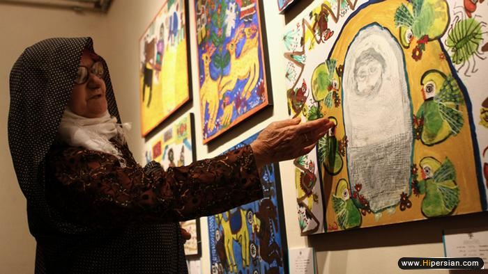
شغل ننه حسن: قالیباف
پسر ننه حسن که خود نقاش است در مورد چگونگی آشنایی مادرش با نقاشی میگوید: «او از کودکی به قالیبافی و طراحی نقوش قالی مشغول بود.»
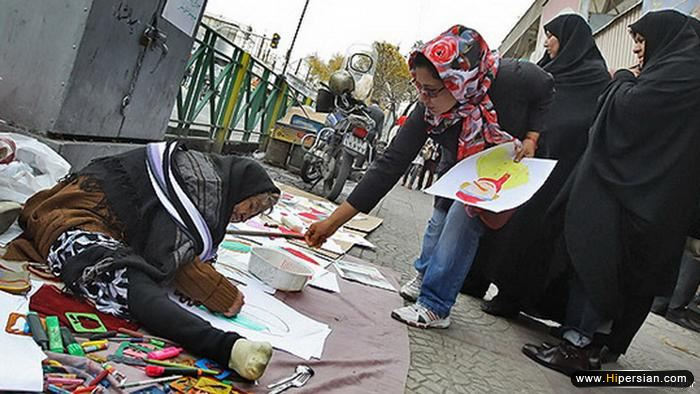
گذران روزگار در سن بالا
ننه صنوبر هر روز بساط نقاشی های کودکانهاش را در محله یافت آباد تهران پهن میکند تا روزگارش بگذرد. میگوید هرچه به ذهنم می رسد میکشم. مردم وقتی می بینند این نقاشی را یک پیرزن کشیده دوست دارند و می خرند.
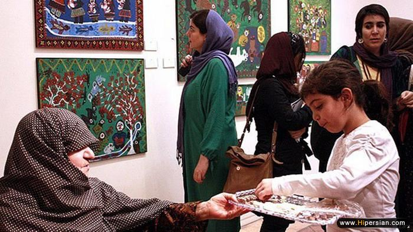
قیمتگذاری آثار ننه حسن
به گفته مدیر گالریهای خانه هنرمندان:« قیمتگذاری آثارهنرمندان خودآموخته متأثر از جذب مخاطب است که اگر بتواند روی مخاطب تأثیرگذار باشد، قیمت این آثار هم رشد میکند. آثار ننه حسن از حدود یک میلیون و یک میلیون و 500 هزار تومان شروع میشود.»
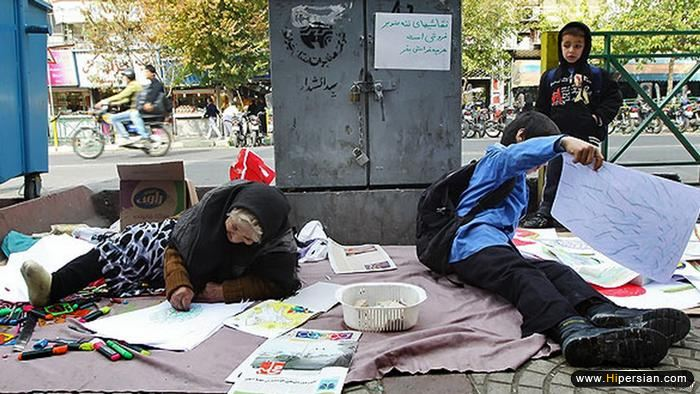
قیمت گذاری آثار ننه صنوبر
ننه صنوبر میگوید: «کسانی که سواد دارند این نقاشی ها را در نمایشگاه میگذارند. اگر کسی بگوید چند تومان میفروشی می گویم هر چقدر دوست دارید بدهید و حتما امضایش میکنم چون نقاشان بزرگ هم امضا دارند».
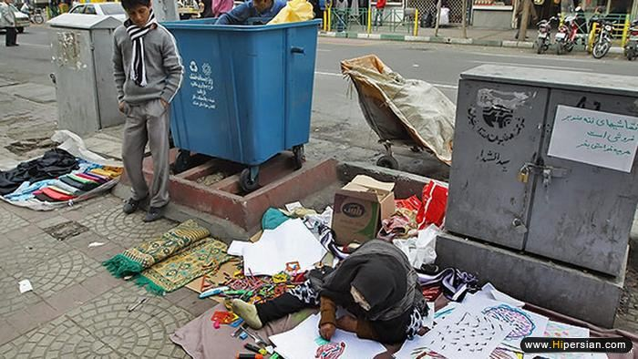
به این تصویر خوب نگاه کنید
ننه صنوبر، گدایی نمیکند. نقاشی میکشد تا رهگذران «هر چقدر که دوستدارند بدهند» تا او بتواند در این سن بالا هزینههای زندگیاش را تامین کند. در کنار ننه صنوبر، جوانی چهار قلم جنس را در کنار خیابان چیده و مشغول دست فروشی است. پشت سر او جوان دیگری در میان زبالهها در حال جستجو است.
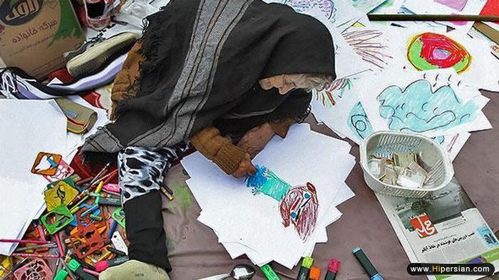
ننه صنوبر، نوآوری و الزامات زندگی
اینکه ننه صنوبر در این سن بالا در کنار خیابان و با یک نوآوری برای گذراندن زندگی خود تلاش میکند، حاوی نکات مثبت و منفی بسیاری است. جمعیت کهنسال ایران در حال افزایش است. همه این جمعیت ننه صنوبر نیستند. درصد زیادی از این جمعیت نیازمند کمک هستند.
چه میتوان از کهنسالان یادگرفت
حقیقتشناس با بیان این که آثار هنرمندان خودآموختهای همچون ننه حسن به طور مستقیم از زندگی آنها نشأت میگیرد میگوید: «آثار این هنرمندان تحت تاثیر زندگی آنهاست و آن چه در زندگی میبینند و دچار آن شده اند به نمایش میگذارند. این آثار قرار نیست که روی زندگی تاثیر بگذارند بلکه یادآوری میکنند آنچه را که دیگر هنرمندان در تولید آثار هنری فراموش کردهاند.»
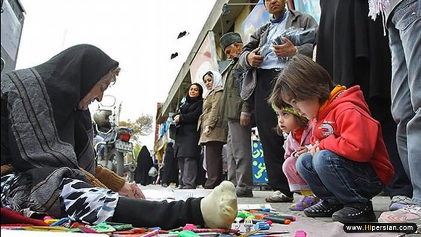
ننه صنوبر و ارزش هنر
ننه صنوبر چند سالی است با نقاشی کشیدن گوش به ندای درونیاش میدهد که البته با چاشنی تامین هزینه زندگی نیز همراه است. هنر، هنر است و ارزش گذاری (نه تنها مادی) نیز برعهده مخاطب هنرمند.
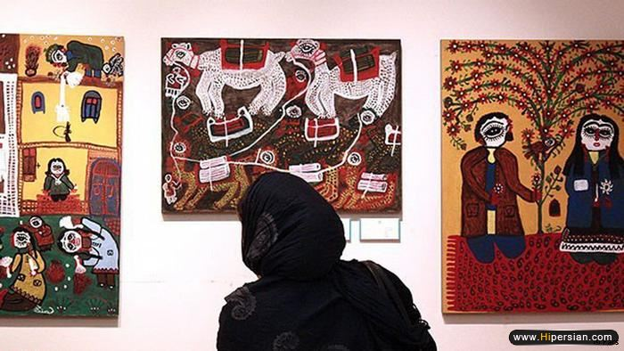
ننه حسن و ارزش هنر
بازنمود روایتها، افسانه ها، داستان وارهها، منظومهها، اعتقادات، اسطورهها و آئینهای کهن را میتوان در غالب آثار ننه حسن دید که صادقانه به تصویر کشیده شدهاند.
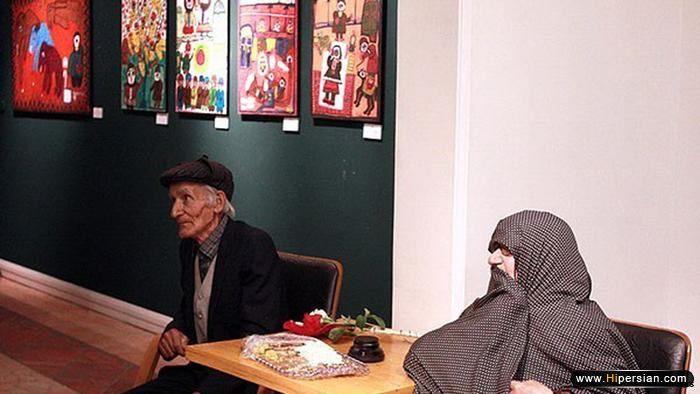
ننه حسن، نماد «پیری پایان راه نیست»
در جوامع سنتی، مقولهای بنام «بازنشستگی» وجود ندارد. در جوامع در حال توسعه اما بازنشستگان کاربردی ندارند. ننه حسن نشان داد که پیری پایان راه نیست و میتواند سرآغاز فصلی نوین در زندگی باشد. اکنون در بسیاری از جوامع پیشرفته از تواناییها و تجربیات سالمندان در رشتههای گوناگون استفاده میشود و بسیاری از آنها به کارها و علائقی میپردازند که در گذشته وقت، امکان و شاید پول آن را نداشتند.
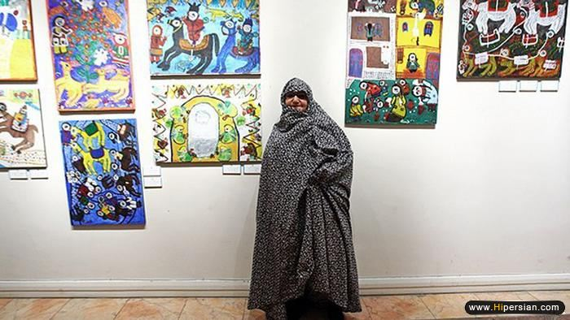
پیری پایان راه نیست
ترودی شرودر، زن ۶۶ آلمانی سال گذشته به همراه چند زن هنرمند دیگر بعد از بازنشسته شدناش یک مغازه فروش صنایع دستی راه انداخت. او در مورد برنامه کاریاش به دویچه وله میگوید که روز دوشنبه به کلاس آموزش زبان انگلیسی میرود، روز سهشنبه آموزش زبان اسپانیایی در دستور کارش است و روز جمعه نیز برای شاگردانش کلاس آموزش نقاشی دارد. حکایت ننه حسن و ترودی شرودر نمونههای خوبی برای فرهنگسازی است.
جهان زن
ارسال به
بالاترین
،
توییتر
،
فریندفید
،
فیسبوک
در همين بخش :
 یک خبر تلخ؟ یک قانونشکنی؟ یک تصمیم بخشنامهای جدید؟ یک خبر تلخ؟ یک قانونشکنی؟ یک تصمیم بخشنامهای جدید؟
چرا بایست به سکسوالیته پرداخت؟ / نفیسه آزاد
آزارجنسی خانگی؛ «قربانی» نه، «نجات یافته»
زنان، بزرگترین بازندگان بهار عرب
سانسور از دیدگاه جنسیتی/الهه امانی
ديگر بخش ها :
طرح یک میلیون امضا
|
مقالات
|
سایت نوشته ها
|
اخبار
|
گزارش كمپين
|
گفت و گو
|
علیه سکوت
|
كوچه به كوچه
|
نامه های شما
|
گزارش ویژه
|
گفتگو با اعضا
|
ویژه سالگرد کمپین
|
تصویر برابری
|
دل آرام علی
|
تریبون
|
مقالات
|
تاریخ شفاهی
|
خارج از چارچوب
|
کتابخانه
|
درباره کمپین
|
کمپین در شهرها
|
کمپین در بند
|
صدای تغییر
|
ویژه 22 خرداد
|
لایحه حمایت از خانواده
|
گالری
|
عشا مومنی
|
امیر یعقوبعلی
|
خدیجه مقدم
|
راحله عسگری زاده و نسیم خسروی
|
پروین اردلان،جلوه جواهری، مریم حسین خواه، ناهید کشاورز
|
زینب پیغمبرزاده
|
سعیده امین، سارا ایمانیان، محبوبه حسین زاده، ناهید کشاورز و همایون نامی
|
احترام شادفر
|
نسیم سرابندی زاده،فاطمه دهدشتی
|
وبلاگ مهمان
|
پرونده خرم آباد
|
دستگیری ها
|
مریم مالک
|
پرستو اللهیاری
|
مهرنوش اعتمادی
|
سمیه رشیدی
|
Other Languages
|
همراهان
|
«فراخوان کمپین ده روز با بهاره هدایت»
| English
|